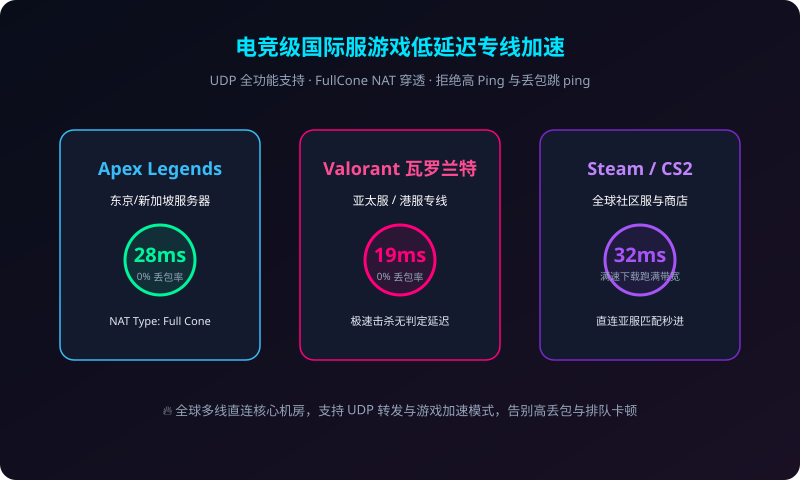

2026全新Clash Party与Clash节点极速配置保姆级教程：从零开始实现全球加速
手把手教你如何从零获取 SSRDog 专属订阅并在最新 Clash Party 客户端完成一键导入，涵盖 Rule 智能分流规则设置与故障排查。
为外贸跨境、大模型 AI 交互、4K/8K 顶级流媒体追剧及出海电竞打造的企业级专线服务。完美支持 Shadowrocket、Clash、Clash Party、v2rayN 全平台客户端，超低延迟，晚高峰从容秒开。
端到端物理直穿，0 封锁 0 审查
最高支持 1000Mbps 极速跑满
ChatGPT、Claude、Netflix 原生 IP
三网智能 BGP 容灾热备

告别频繁掉线、卡顿、换节点的焦虑。SSRDog 采用业内顶级服务器集群与独享物理专线通道，提供真正持久、纯净、安全的高速网络服务。
内网物理专线不过 GFW，不受敏感时期干扰。无论是香港、日本、新加坡还是欧美节点，均实现超低时延与零丢包率传输。
全部节点配备原生家庭住宅住宅 IP，丝滑解锁 Netflix 非自制剧、Disney+、HBO Max、YouTube 4K/8K 视频，无缝访问 ChatGPT 与 Claude 3.5。
内存化临时运行架构，绝不记录任何用户 DNS 查询、网络活动与真实 IP，杜绝 WebRTC 泄漏，保障外贸跨境与隐私安全。
电信、联通、移动多线接入，自动感知网络抖动并在毫秒级内完成自动切换，晚高峰黄金时段依然跑满您的宽带物理极限。
一键导入 Clash、Clash Party、Clash Verge Rev、Shadowrocket 小火箭、Quantumult X 与 v2rayN，小白零门槛一键配置。
专业网络工程师全天候在线维护线路稳定，提供 Telegram 极速沟通群与后台工单系统，任何网络疑问秒级响应解决。
打破行业暴利，拒绝虚高资费。从轻量尝鲜到大流量商业旗舰，SSRDog 机场始终秉持公认的“便宜稳定”口碑。
适合轻度网页浏览、查阅文献与日常社交
主流用户首选，畅快观看 4K 高码率流媒体与 AI 研究
为跨境电商大卖、工作室、外贸多账号运营而生
无论是外贸跨境、大模型研究还是家庭娱乐，SSRDog 节点均经过专项场景深度调优。
Amazon、Shopee、TikTok Shop、Shopify 卖家必备。纯净节点 IP 有效防封号、防账号关联，外贸邮件与即时通讯秒级同步。
高频调用 ChatGPT、Claude 3.5 Sonnet、Midjourney、GitHub Copilot 与 Hugging Face，杜绝频繁拦截与 IP 封禁。
Netflix 跨区片库解锁、Disney+ IMAX 模式、YouTube 4K/8K 杜比视界秒开不转圈，告别低清晰度与频繁缓冲。
Steam、Apex 英雄、瓦罗兰特、CS2 专属优化线路。支持 UDP 转发，亚服直连延迟低至 18ms，无丢包不掉线。
支持 Windows、Mac、iOS、Android 全平台。挑选您常用的软件，根据指引复制 SSRDog 专属订阅即可立即翻墙出海。
Clash Party 是 2026 年广受欢迎的跨平台内核前端，界面简洁纯粹，内存占用极低，支持现代智能路由。
打开 Clash Party 客户端，点击侧边栏【Profiles / 配置】，在 URL 栏粘贴刚才复制的链接并点击【Save / 保存】完成节点同步。
在【Proxies / 代理】中选择延迟最低的香港或日本 IPLC 专线，在主界面勾选【System Proxy / 系统代理】，即可开启全球加速。
基于 Meta (Mihomo) 内核的现代化桌面端客户端，支持 TUN 虚拟网卡模式与精致美观的深色 UI。
在 SSRDog 用户中心复制标准 Clash 订阅链接，确保账户处于有效订阅期内。
进入 Clash Verge 的【订阅】页面，粘贴链接并点击【保存】，客户端将自动拉取最新的高可用节点池。
在【设置】中开启【系统代理】或【TUN 模式】，分流模式选择【规则 (Rule)】，国内外流量自动分流互不干扰。
iPhone 与 iPad 最强大的科学上网神器，支持免拔卡访问 TikTok、快捷节点切换与按域名分流。
使用 Safari 登录 SSRDog 官网，在仪表盘点击【导入到 Shadowrocket】或者使用小火箭右上角【+】扫描网页二维码。
进入主界面点击【连通性测试】，挑选 Ping 值绿色且延迟低于 40ms 的专线节点。
全局路由选择【配置】（智能分流），打开最上方的连接开关，初次使用点击“允许”添加 iOS VPN 配置即可。
轻量经典老牌 Windows 工具，支持 Xray 核心与多种现代加密传输协议。
点击菜单栏【订阅分组】->【订阅分组设置】，点击添加，别名填“SSRDog”，URL 粘贴官网订阅链接。
点击【订阅分组】->【更新全部订阅(不通过代理)】，瞬间加载全球所有优选专线节点。
选中一个香港或日本节点按 Enter 键设为主节点，并在底部将路由模式设为“绕过大陆”即可。

已为超过 100,000+ 跨境企业、科研工作者及出海玩家提供坚不可摧的网络加速支持。
“做亚马逊和 TikTok 运营两年来踩过无数机场的坑，经常动不动就被封号或者晚高峰打不开后台。换到 SSRDog 之后，原生住宅 IP 非常纯净，速度快到飞起，真是一分钱一分货！”
“平时每天要深度使用 ChatGPT 4o 和 Claude 进行写代码和论文润色，其他普通机场经常抛 1020 错误或者 Access Denied。SSRDog 的专线出口非常干净，几乎没有被拦截过，省了大心！”
“晚上 9 点黄金时间看 YouTube 4K 60帧视频测速能稳定跑 280,000 Kbps，拉进度条几乎零缓冲等待！小火箭和 Clash 导入订阅也非常简单，是我近几年用过最省心的魔法梯子。”
帮助您全面了解 SSRDog 机场的服务模式、专线优势与购买使用常识。
普通廉价翻墙梯子大多使用公网 VPS 直连，流量直接暴露在公网审查体系下，敏感时期极其容易大面积断连、高丢包、掉节点。而 SSRDog 采用高成本的物理 IPLC/IEPL 国际专线，通过国内 BGP 多线接入内网光纤直达海外机房，不经过公网 GFW 审查，延迟极低（低至 20ms）且稳定性高达 99.9%，真正做到晚高峰不掉线。
SSRDog 官网支持支付宝、微信支付以及加密货币 USDT等多种安全便捷的结账途径。支付完成后系统全自动开通服务，无需人工审核，1 秒内即可在仪表盘获取专属订阅链接并导入客户端。
不同套餐支持的并发设备数有所不同：基础版默认支持 2 台设备，进阶版支持 5 台设备，旗舰商业版支持高达 10 台设备同时在线。您可以自由在手机、电脑、平板和路由器等全家桶设备上配置使用。
OpenAI 和 Anthropic 对机房数据中心（Data Center）IP 实施极为严厉的风控封禁。SSRDog 核心节点均搭配原生家庭住宅住宅 ISP IP，并且经过严密防关联与 DNS 污染清洗，IP 纯净度极高，能够最大程度避免“1020 Access Denied”与账号风控风险。
通常情况下只需在客户端中检查系统时间是否校准准确，或在客户端中开启【允许不安全连接】重新更新订阅。如果仍有问题，SSRDog 拥有 24 小时活跃的官方 Telegram 交流群和后台工单系统，专业技术人员将第一时间为您排查解决。
我们为您整理了 10 篇涵盖客户端配置、专线技术、流媒体解锁、跨境安全与性价比选型的保姆级实战指南。
实操教程
手把手教你如何从零获取 SSRDog 专属订阅并在最新 Clash Party 客户端完成一键导入，涵盖 Rule 智能分流规则设置与故障排查。
iOS 神器
针对苹果 iPhone 用户详细讲解 Shadowrocket 的节点导入技巧、证书信任、免拔卡畅刷海外 TikTok 以及分流策略配置指南。
 选购避坑
选购避坑
教你一眼识破月抛廉价直连机场的跑路套路，解析 IPLC 专线带宽成本与定价平衡点，挑选真正省心不折腾的高性价比机场。
 跨境出海
跨境出海
深度梳理亚马逊、TikTok Shop、PayPal 等风控体系对 IP 属性的要求，指导外贸团队构建防封号、防关联的纯净专线网络环境。
 影音娱乐
影音娱乐
针对奈飞跨区、Disney+ 原创剧集与油管超高清码率，实测 SSRDog 港日美原生节点解锁表现与超低缓冲技术底层原理。
AI 提效
揭秘 Cloudflare 与 OpenAI 针对机房 IP 的屏蔽策略，提供零拦截访问 GPT-4o 与 Claude 3.5 的分流规则与原生住宅节点方案。
技术科普
通俗透彻对比 IPLC/IEPL 内网专线、BGP 隧道中转与普通公网直连的技术差异，揭示为什么只有专线才能在黄金晚高峰保持 0 丢包。
工具测评
从资源占用、分流灵活性、TUN 虚拟网卡支持到易用性，全方位评测当前主流桌面客户端，助你选出最趁手的科学上网利器。

电竞游戏手把手教你利用 SSRDog 专线实现 FullCone NAT 穿透与 UDP 转发，打造媲美专业游戏加速器的超低延迟电竞体验。
隐私安全
深入分析科学上网中的三大隐蔽安全盲区：DNS 污染、WebRTC 真实 IP 泄漏与运营商 SNI 阻断，提供全套安全加固配置方案。